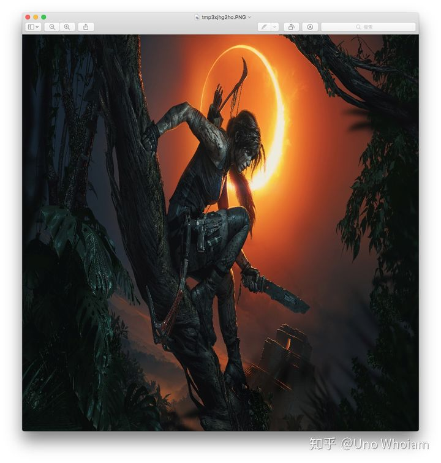
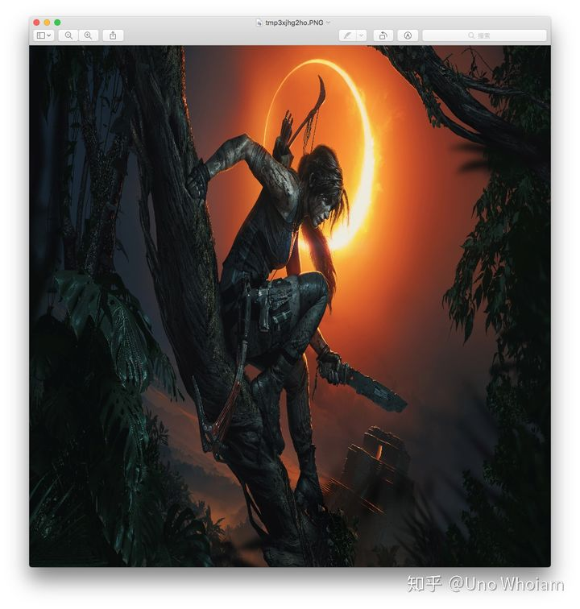

原论文地址：
Spatial Pyramid Pooling in Deep Convolutional Networks for Visual Recognition
SPPNet的动机
一般而言，对于一个CNN模型，可以将其分为两个部分：
- 前面包含卷积层、激活函数层、池化层的特征提取网络，下称CNN_Pre
- 后面的全连接网络，下称CNN_Post
许多CNN模型都对输入的图片大小有要求，实际上CNN_Pre对输入的图片没有要求，可以简单认为其将图片缩小了固定的倍数，而CNN_Post对输入的维度有要求，简而言之，限制输入CNN模型的图片尺寸是为了迁就CNN_Post。
SPPNet的立意就在于，找到一种合适的方式，无论CNN_Pre输出的feature maps尺寸是怎样，都能输出固定的维度传给CNN_Post，如下图。

SPPNet的实现
Pytorch实现参考
1 | import math |
SPP的本质就是多层maxpool，只不过为了对于不同尺寸大小 $a \times a$ 的featur map 生成固定大小 $n \times n$ 的的输出，那么 $pool_{n \times n}$ 的滑窗win大小，以及步长str都要作自适应的调整：
$$
win = ceil(a / n) \
str = floor(a / n)
$$
ceil、floor分别表示上取整、下取整。
然后多个不同固定输出尺寸的 $Pool$ 组合在一起就构成了SPP Layer，在论文中就用了 $pool_{5 \times 5}$ 、$pool_{4 \times 4}$、$pool_{3 \times 3}$、$pool_{2 \times 2}$、$pool_{1 \times 1}$的组合，对于尺寸为 $(c, a, a)$ 的feature maps，该组合的输出为 $(c, 55)$

SPP作用
对于不同尺寸的CNN_Pre输出能够输出固定大小的向量当然是其最大的好处，除此之外SPP的优点还有：
- 可以提取不同尺寸的空间特征信息，可以提升模型对于空间布局和物体变性的鲁棒性。
- 可以避免将图片resize、crop成固定大小输入模型的弊端。
resize、crop后，一方面是resize会导致图片中的物体尺寸变形，比如下面这个劳拉；
另一方面，crop会导致图片不同位置的信息出现频率不均衡，例如图片中间的部分会比角落的部分会被CNN看到更多次。
 

图像分类
将SPP层添加到原有的CNN模型中可以提高其模型表现，有趣的是，最大的提升出现在表现最好的网络Overfeat-7上。由于SPP层输出不变的特性，训练时可以采用不同尺寸的图片，如果在 $224 \times 224$ 的基础上增加 $180 \times 180$ 的尺寸进行训练。另外，ZFNet使用no SPP $36 \times 256$ 的全连接和$pool_{4 \times 4}$、$pool_{3 \times 3}$、$pool_{2 \times 2}$、$pool_{1 \times 1}$组合的SPP输出 $30 \times 256$ 的维度给全连接层进行对比，有SPP层的表现更好，证明了SPP-ZFNet并非靠更多的参数取胜，而是靠其本身的特性取胜。
物体检测
SPPNet用于物体检测只需对图像（每种尺寸下）做一次特征提取，比当时的 R-CNN 快了很多，具体算法流程如下：
- 使用selective search 生成2000个Proposal区域。
- 将图片resize 成 $s = min(w, h) \in {480, 567, 688, 864, 1200}$ ，每种尺寸使用CNN做一次特征提取。
- 对于每个Proposal找到Proposal区域大小最接近 $224 \times 224$ 的那个尺寸，找到feature maps上对应的区域，左上角坐标 $x_{lt} = floor(x/S)+1$ ，右下角坐标 $x_{rb}=ceil(x/S)-1$ ，其中 $x$ 为Proposal于图像上的像素坐标，$S$为feature maps 的最终Stride大小，floor、ceil分别为下取整、上取整。找到对应区域后，使用 $pool_{6 \times 6}$、$pool_{3 \times 3}$、$pool_{2 \times 2}$、$pool_{1 \times 1}$对该区域的feature map 进行特征提取，得到 $50 \times Channel$ 维的特征向量。
- 每一个类别都使用训练好的二值分类SVM对这个特征向量进行判定，or 使用全连接层+(class_num+1)路softmax进行类别判定。
- 边框回归，NMS。
SPP和Fast R-CNN的ROI Pooling是一脉相承的。